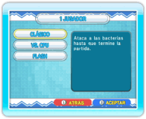

14 |
Modo un jugador / Modo dos jugadores (Dr. Mario) |
 |

● 1 jugador Este es el modo para un jugador. Selecciona 1 JUGADOR en la pantalla del menú de Dr. Mario para acceder a la pantalla de selección del modo un jugador. Hay 3 modos de juego disponibles: CLÁSICO, VS. CPU y FLASH. Tras seleccionar un modo de juego, se visualizará la pantalla de opciones de juego, donde podrás configurar NIVEL (la cantidad de bacterias a eliminar), VELOC. (la velocidad a la que caen las cápsulas) y MÚSICA. La partida comenzará en cuanto hayas configurado las opciones. Nota: Al jugar al modo Vs. CPU o al modo Flash, podrás ajustar también las opciones del jugador controlado por la consola. ● 2 jugadores Este es el modo para dos jugadores. Selecciona 2 JUGADORES en la pantalla del menú de Dr. Mario para acceder a la pantalla de selección del modo dos jugadores. Los modos de juego disponibles son CLÁSICO y FLASH. Después de seleccionar un modo de juego, podrás ajustar las opciones para cada jugador. También puedes cambiar de Mii pulsando Cuando termine la partida, se mostrará la pantalla de resultados. El jugador 1 podrá entonces seleccionar OTRA VEZ o SALIR. Nota: Tendrás que conectar otro mando de Wii a la consola para poder jugar una partida de dos jugadores. |

 |
 |
 |